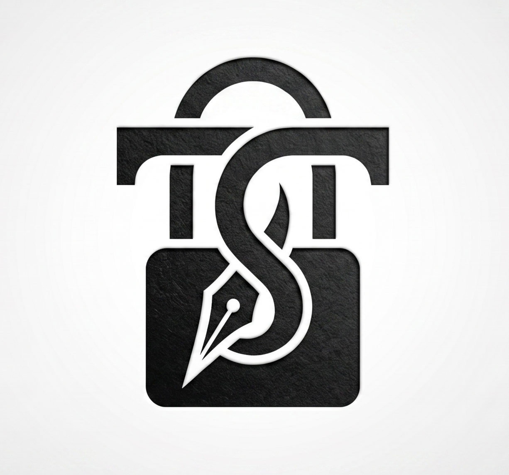

MOST ROBUST HW BLS SIGNER ON TEZOS
Trusted by TezBake bakers across the network — battle-tested in production.
Keys never leave the gadget. Custom read-only image and wire protocol keep secrets isolated.
Fast BLS signing. 3-second boot. Ready before your baker even asks.
RPi Zero 2W, RPi 4, or Radxa Zero 3. No expensive HSMs.
Multi-baker, multi-device, power-loss safe, full TezBake integration, and 3-second boot.
Minimal Yocto Linux. Just what's needed for signing, nothing more.
Optional automatic unlock on boot. No manual intervention after a power cycle.